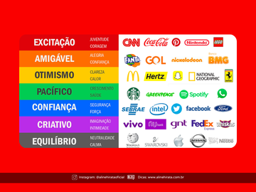
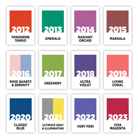

Trio:Breno Chaves, Pedro Demartini, Antony Alex
1: Oque é psicologia das cores?
A psicologia é a ciência que estuda o comportamento humano,
os processos mentais (como pensamento, emoção e aprendizado) e a subjetividade.
Ela investiga o que motiva as ações, os sentimentos
e como as pessoas interagem consigo mesmas e com o ambiente.

2: Por que as empresas investem no uso de estrategia das cores?
As empresas investem na estratégia das cores porque elas são ferramentas poderosas
de comunicação não verbal que influenciam diretamente as emoções, comportamentos e decisões de compra dos consumidores.
Mais do que estética, o uso estratégico das cores — baseado na psicologia das cores
ajuda a construir a identidade da marca, diferenciar-se da concorrência e aumentar o reconhecimento da marca em até 80%

3: O que é a cor do ano?(pantone)
A Cor do Ano Pantone é uma seleção anual realizada pelo Pantone Color Institute desde 2000
que define uma tonalidade para representar tendências culturais, sociais e
emocionais globais. Ela funciona como uma previsão de comportamento, influenciando
Ela funciona como uma previsão de comportamento, influenciando áreas como moda, design, decoração e marketing.

4: Escolha uma propagando e analise:
Qual sensação ou sentimento transmite